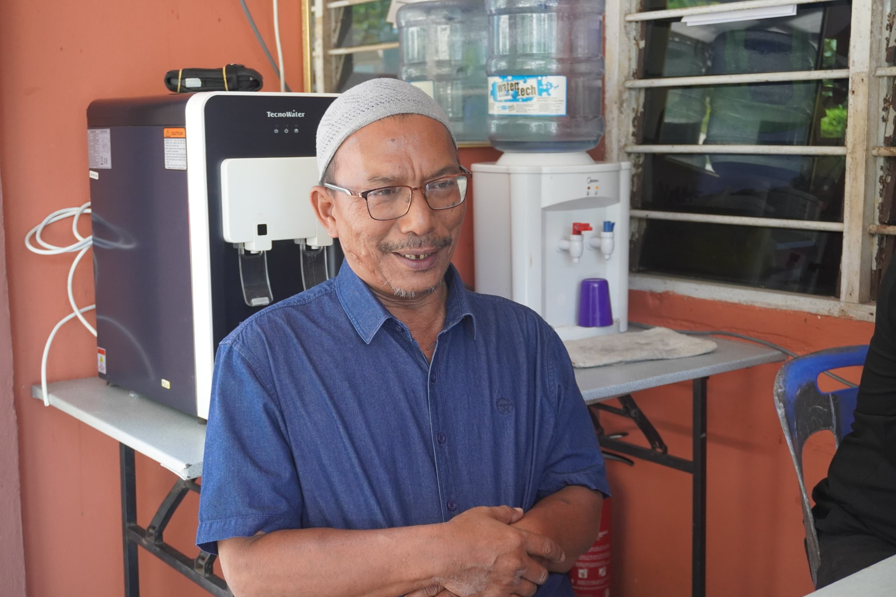

Muzium Kota Kayang merupakan pusat warisan budaya Perlis yang menyimpan pelbagai artifak bersejarah. Pakcik Usopp, seorang penjaga warisan, telah berkhidmat lebih dua dekad untuk memastikan tradisi negeri terus hidup.